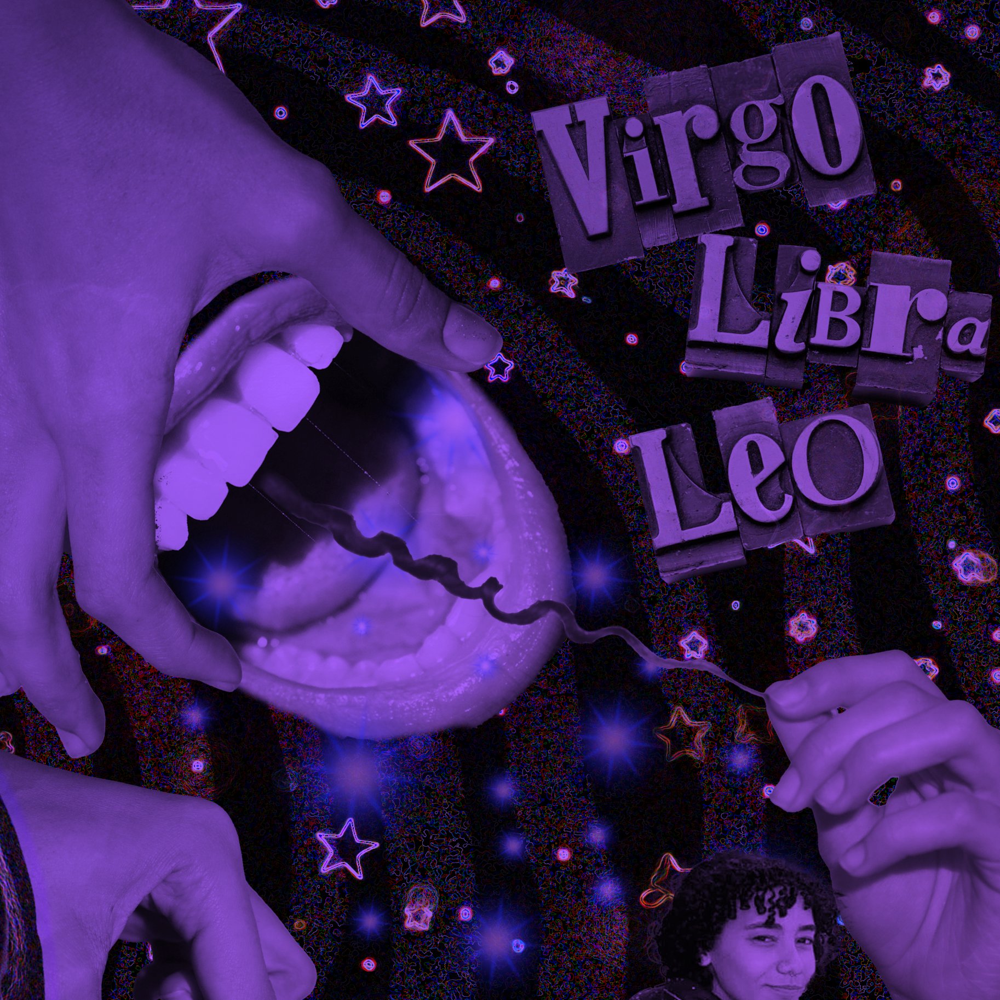
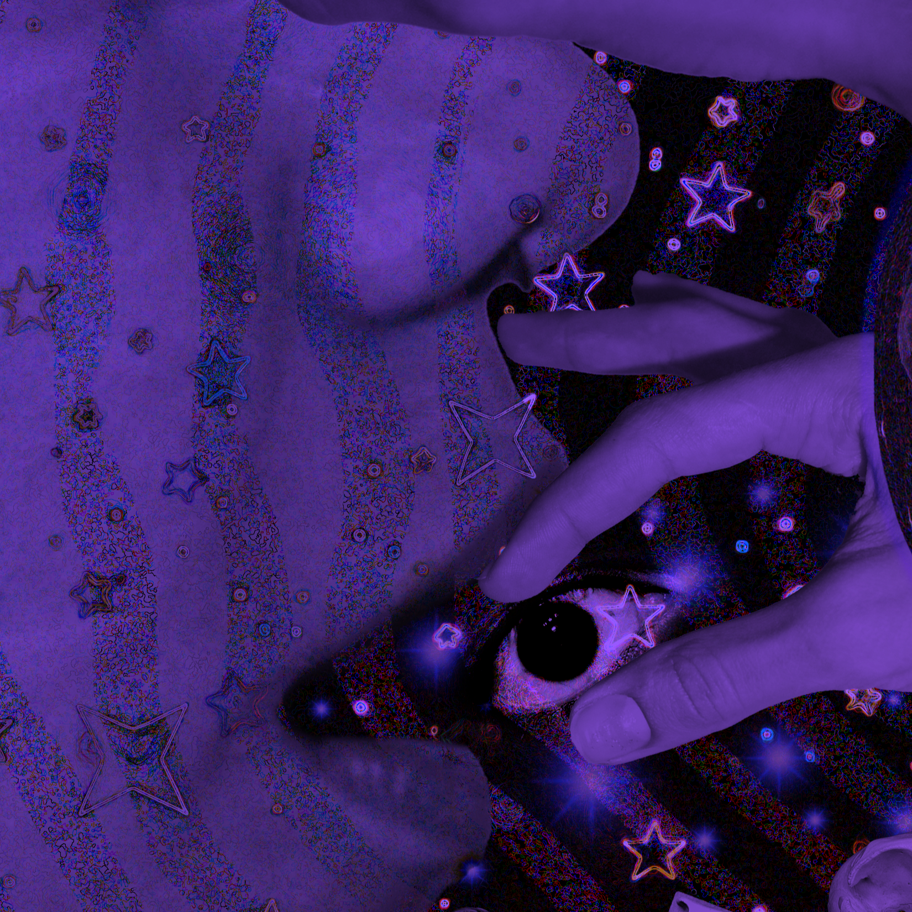
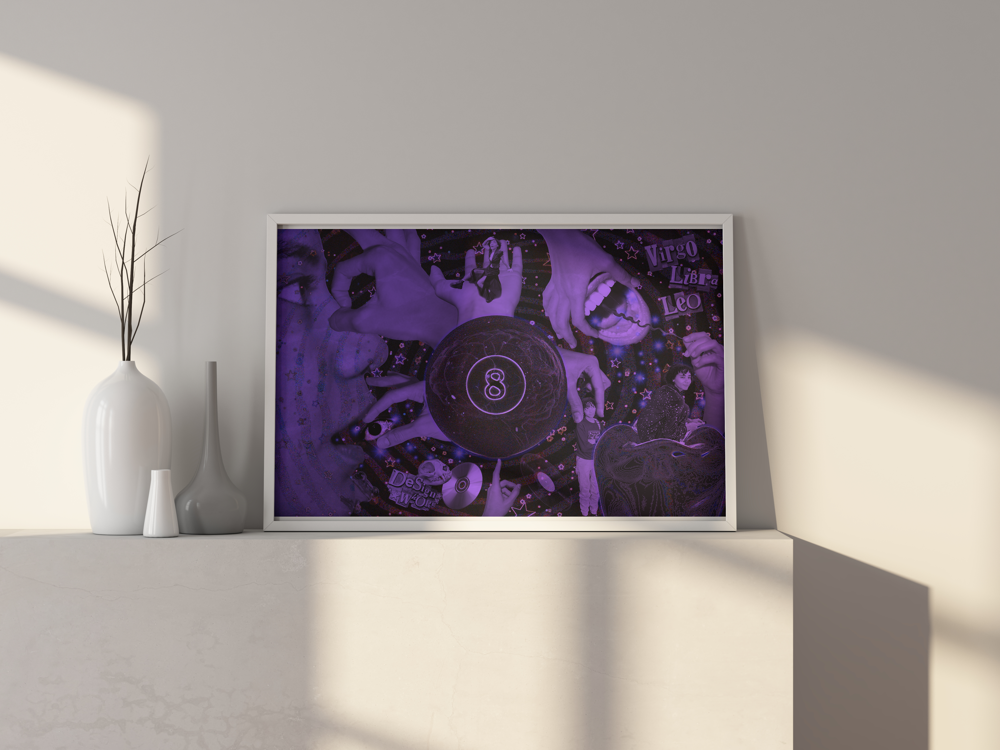

Photoshop Self Portrait
2025, Adobe Photoshop
This project is an abstract self-portrait created in Photoshop. I began by brainstorming symbols and objects that hold personal meaning, then photographed myself and various parts of my body to incorporate into the composition. The final piece blends these elements into a surreal visual narrative that reflects different aspects of my identity and imagination.


![A self portrait with a purple hue over it featuring an 8-ball with a brain overlayed. The left side is completly taken up by a side profile photo of me. Hands are coming out of the 8-ball, one is coming from the top of the screen and one is pointed up from the bottom towards the 8-ball. Two hands are holding photos of me, one is holding an eye near the mouth of the side profile photo, one is flicking the eye of the side profile photo. There is a photo of me crouching on a black tooth with a hand coming out from behind pulling a piece of hair from my mouth which is being held by the hand at the top. The background is black with stars and a large spiral overlayed. Random things are floating in the blank spaces like a cat skull, CD, vinyl record, frog, and letterpress letters spelling out 'virgo', 'leo', 'libra', & 'design whore'.](images/Final_Self_Portrait.png)


